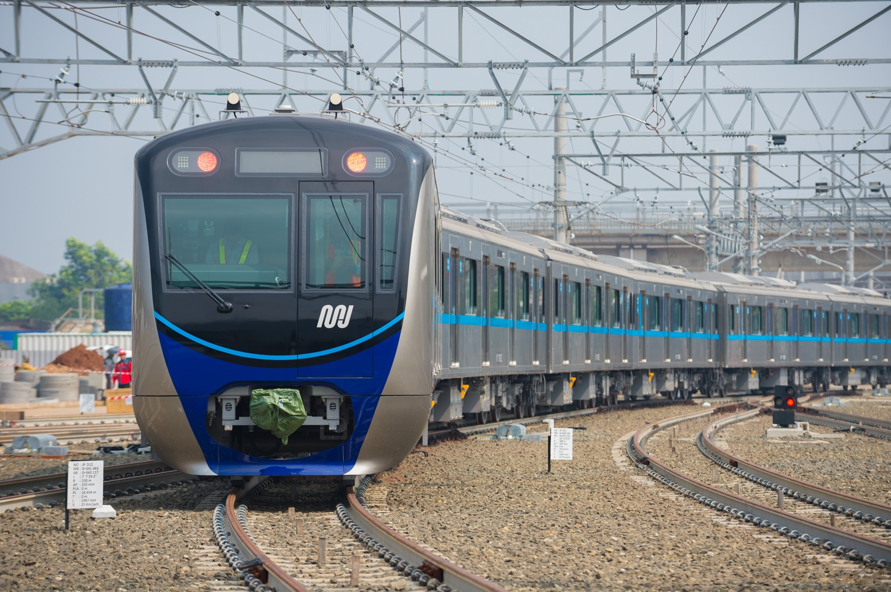
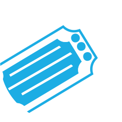
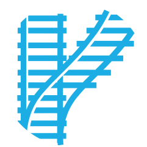

<ion-content>
  <ion-searchbar animated placeholder="Apa yang anda ingin cari?"></ion-searchbar>
  
  <div class="slider">
  <ion-slides pager="true" [options]="slideOpts">
    <ion-slide >
      
    </ion-slide>
    <ion-slide ionSlideReachStart>
      
    </ion-slide>
    <ion-slide ionSlideTransitionEnd>
      
    </ion-slide >
  </ion-slides>
</div>

<div class="button">
  <ion-item>
    <ion-tab-button href="/tiket">
      
 
      <ion-label >Ticket MRT</ion-label>
    </ion-tab-button>

    <ion-tab-button href="rute">
      
      <ion-label>Rute MRT</ion-label>
    </ion-tab-button>

    <ion-tab-button href="jadwalhariini">
      
      <ion-label>Jadwal Hari Ini</ion-label>
    </ion-tab-button>
  </ion-item>
</div>
  
  <div class="pesanan">
    <ion-card>
      <ion-card-header>
        <ion-card-subtitle>id pesananan
        </ion-card-subtitle>
      </ion-card-header>    
      <ion-card-content>
        <ion-text>
          tujuan
        </ion-text>
      </ion-card-content>

    </ion-card>
  </div>


</ion-content>

<div class="bawah">
  <ion-footer>
    <ion-toolbar>
      <ion-tabs>
        <ion-tab-bar slot="bottom">

          <ion-tab-button tab="home">
            <ion-icon color= "primary" name="home"></ion-icon>
            <ion-label color= "primary">Beranda</ion-label>
          </ion-tab-button>
      
          <ion-tab-button href ="/booking">
            <ion-icon name="book-outline"></ion-icon>
            <ion-label>Pesanan</ion-label>
          </ion-tab-button>

          <ion-tab-button tab="mic">
            <ion-icon size ="large" color="red" name="mic-outline"></ion-icon>
          </ion-tab-button>
      
          <ion-tab-button href="/riwayat" >
            <ion-icon name="receipt-outline"></ion-icon>
            <ion-label>History</ion-label>
          </ion-tab-button>
      
          <ion-tab-button href="/profile">
            <ion-icon name="person"></ion-icon>
            <ion-label>Profile</ion-label>
          </ion-tab-button>
        </ion-tab-bar>
      </ion-tabs>  
    </ion-toolbar>
  </ion-footer>
</div>
